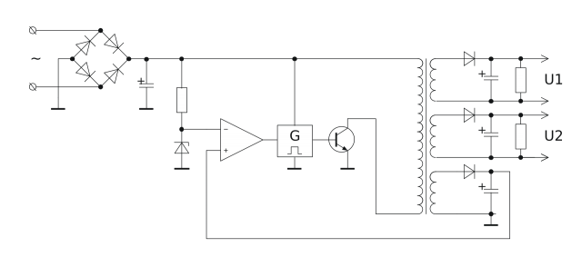
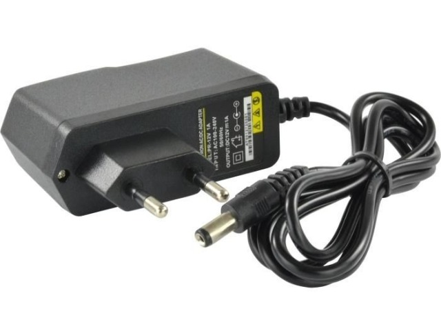

Zasilacz Impulsowy

Jest to zasilacz zbudowany w oparciu o przetwornicę napięcia.
Pierwsza sekcja, występująca tylko w zasilaczach sieciowych, służy do przetworzenia napięcia przemiennego na napięcie jednokierunkowe i zmniejszenie jego zmian. Sekcja ta składa się z prostownika (zwykle mostka Graetza) i kondensatorów wygładzających tętnienia.
Napięcie stałe dociera do sekcji kluczującej. W zasilaczach impulsowych jako klucze wykorzystuje się tranzystory, przełączane między stanem nasycenia i zatkania przy pomocy impulsów sterujących o zmiennej długości (modulacja szerokości impulsów). Utworzony w ten sposób przebieg prostokątny trafia do uzwojenia pierwotnego transformatora. Częstotliwość impulsów (dochodząca do setek kHz) jest o wiele większa od częstotliwości sieci energetycznej, dzięki temu transformatory stosowane w zasilaczach impulsowych mogą być znacznie mniejsze niż w przypadku tradycyjnych zasilaczy transformatorowych.
Napięcie wychodzące z uzwojenia wtórnego transformatora trafia do prostownika złożonego z diod przystosowanych do pracy z dużą częstotliwością. Tętnienia napięcia są wygładzane przez dławiki i kondensatory o dużej pojemności. Jeśli zasilacz ma dostarczać kilka różnych napięć wyjściowych, wówczas w transformatorze stosuje się kilka uzwojeń wtórnych.
Wyróżnia się następujące topologie zasilaczy impulsowych:
1.Flyback (dwutaktowy, z gromadzeniem energii w polu magnetycznym rdzenia) – fazie pierwszej klucz tranzystorowy jest zwarty i poprzez uzwojenie pierwotne gromadzi energię w polu magnetycznym rdzenia transformatora. Kiedy tranzystor zostaje wyłączony, rdzeń oddaje energię poprzez indukcję na uzwojenie wtórne (flyback oznacza wyindukowanie impulsowego napięcia). Częstotliwość ładowania jest stała, ale czas trwania impulsów jest kontrolowany przez układ elektroniczny i jest zależny od obciążenia po stronie wtórnej. Topologia flyback wykorzystywana jest głównie w zasilaczach małej mocy, np. w ładowarkach do telefonów komórkowych. Pozwala na konstrukcję bardzo prostych zasilaczy, których jednak główną wadą jest niższa sprawność energetyczna (w porównaniu do innych topologii).
2.Forward (przetwornica przepustowa) – jednotaktowy zasilacz z transformatorem zapewniającym izolację galwaniczną między wejściem a wyjściem. Przekazanie energii z wejścia na wyjście odbywa się poprzez transformator w czasie gdy tranzystor jest załączony. Stosowany w zasilaczach o mocy nie przekraczającej kilkuset watów oraz w spawarkach.
3.Half-bridge (pół-mostek) i full-bridge (pełny mostek) – to układy pod względem konstrukcyjnym podobne do transformatora sieciowego. Do działania potrzebują napięcia przemiennego na uzwojeniu pierwotnym. Przebieg napięcia nie jest sinusoidalny lecz prostokątny, generowany przez 2 (w half-bridge) lub 4 (w full-bridge) tranzystory. Zmniejsza to także straty i upraszcza układ. Parametry przebiegu są regulowane przez układ scalony w celu utrzymania stałego napięcia po stronie wtórnej w zależności od obciążenia. Do przełączania napięcia tranzystorami wykorzystuje się podział napięcia po mostku Graetza, za pomocą 2 kondensatorów połączonych szeregowo względem siebie, włączonych równolegle do napięcia. Dzięki temu otrzymuje się układ napięć taki jak w zasilaczu symetrycznym. Układ pół-mostkowy wykorzystywany jest w zasilaczach komputerowych przy mocach dochodzących do kilkuset watów. Układy pełnego mostka pozwalają na transformowanie mocy nawet powyżej 1 kW.
4.Buck (obniżyć) – topologia używana do zasilania napięciem stałym niższym niż wejściowe.
5.Boost (zwiększyć) – topologia używana do zasilania napięciem stałym, które jest wyższe od wejściowego.
6.Buck-boost (odwracająca) – topologia używana do zasilania napięciem stałym o zmienionej biegunowości, niższym lub wyższym od wejściowego.
Zalety i wady:
Zalety:
1.Duża sprawność przekraczająca nawet 90%, istotna zwłaszcza przy zasilaniu z baterii lub akumulatora.
2.Małe rozmiary oraz niewielka masa, w stosunku do przenoszonej mocy, w porównaniu do zasilaczy transformatorowych.
3.Szeroki zakres napięcia wejściowego np. od 100 do 240 V, co umożliwia użytkowanie we wszystkich krajach świata
4.Zabezpieczenia przed zwarciem wbudowane w układy kontrolne zasilacza.
5.Odporność na zakłócenia z sieci i krótkie zaniki napięcia.
6.Niski koszt wytworzenia.
Wady:
1.Źle skonstruowany lub zbudowany ze złej jakości elementów może powodować zakłócenia na wysokiej częstotliwości (kompatybilność elektromagnetyczna) oraz niestabilną pracę podłączonych urządzeń.
2.Skomplikowana budowa pod względem ilości części potrzebnych do pracy, przez co zasilacze impulsowe małej mocy były droższe niż tradycyjne. Na początku XXI wieku wprowadzono odpowiednie układy scalone, w wyniku czego nawet zasilacze o mocy kilku watów stały się tańsze od tradycyjnych.
3.W niektórych rozwiązaniach wymagane jest obciążenie wstępne.
Zastosowanie
Obecnie zasilacze impulsowe prawie całkowicie wyparły zasilacze transformatorowe. Stosowane są one w praktycznie wszystkich urządzeniach podłączanych do napięcia sieciowego (w zależności od regionu świata pomiędzy 100–240 V i 50–60 Hz), takich jak telewizory, komputery i ich osprzęt, ładowarki telefonów komórkowych, do zasilania urządzeń przenośnych i stacjonarnych itp., prócz klasycznych wzmacniaczy elektroakustycznych.
Jednak i w tych ostatnich producenci niekiedy decydują się na stosowanie przetwornicy.
